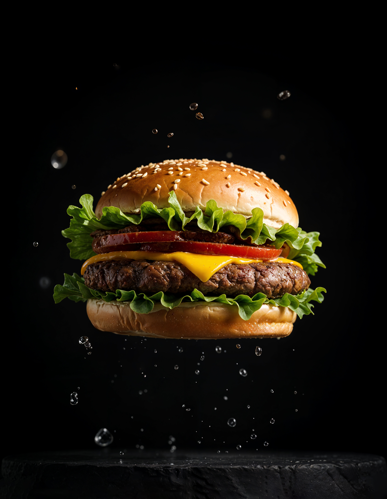

Burger

Description
Today we're going to create a simple home-made burger.
Ingredients
For the patties:
- 1/2 lb (225g) ground beef (80/20 lean-to-fat ration is ideal)
- Salt and pepper to taste
- Optional: garlic powder, onion powder (1/4 tsp each)
For the burger build
- 2 burger buns
- 2 slices of cheese (cheddar, American, etc.)
- Lettuce
- Tomato slices
- Onion slices (raw or grilled)
- Pickles
- Ketchup, mustard, or mayo
Steps
-
Prepare the patties
- Divide the beef into 2 equal portions.
-
Gently shape each into a patty about the size of your bun. Don't
overwork it!
- Season both sides with salt and pepper (and optional spices).
-
Cook the patties:
Option A - Pan or skillet:
-
Heat a non-stick skillet or cast iron pan over medium-high heat.
- Add patties and cook for about 3–4 minutes on the first side.
-
Flip, add a slice of cheese, and cook for another 3–4 minutes (or
until cooked to your liking).
Option B - Grill
- Preheat the grill to medium-high.
- Grill patties for the same time as above, flipping once.
-
Toast the buns
-
Place buns face-down in the pan or grill for 30–60 seconds until
golden.
-
Assemble the burger:
- Bottom bun
- Lettuce
- Burger patty with melted cheese
- Tomato slice
- Onion, pickles
- Sauces
- Top bun
-
Serve:
- Enjoy your burger with fries, chips, or a salad!
Home